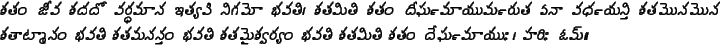

These examples have been taken from the TeluguTeX package, with modifications for use the ITRANS transliteration scheme.
This is the input text that produced the above:
\centerline{#telugu pa.nchata.ntra kadhalu#endtelugu }
\centerline{(Stories from the ``Panchatantra'')}
{#telugu
``parulanu mosagi.nchi hAnichEya talapeTTinavAru tAmE
cheDipOtAru''.
i.ndrapAlituDu anE vartakuDu vyApAra.n nimitta.n
porugudEshAniki pOvalasi vachchi.ndi. ataDu tanavaddanunna
veyyi ba.ngAru nANAlanu, tana mitruDayina dhanaguptuni vadda
dAchi dEshA.ntara.n poyADu. ko.ntakAla.n ayina taruvAta
i.ndrapAlituDu svagrAma.n tirigi vachchADu. ataDu dhanaguptuni
i.nTikipOyi tana ba.ngAru nANAlanu tirigi yimmani aDigADu.
dhanaguptuDu vichAra.ngA ``annA! Emi cheppanu, nI ba.ngAru
nANAlanni.nTinI mA i.nTilO elukalu tinivEshAyi'' ani cheppADu.
dhanaguptuni mOsAnni ardha.nchEsukonna i.ndrapAlituDu
``pOnIlE jariginadAniki chi.nti.nchi Emi phalamu'' ani sardi
cheppi, idivaralOlAgAnE mitrunitO snEha.n kanabarastU unnADu.
konnALLupOyAka, i.ndrapAlituDu dhanaguptuni i.nTivadda kaburlu
chebutU unna samaya.nlO prakkavIdhi lO rEgupaLLU ammakAniki
vachchAyi. paLLu ammEvAni kEkavini dhanaguptuni pillavADu
paLLakOsa.n pOrupeTTADu. ``nEnu koni istAnu rA nAyanA!'' a.nTU
pillavAnini ettukoni i.ndrapAlitiDu prakkavIdhiki
bayaludErADu. paLLu koni, pillavAniki ichchina i.ndrapAlituDu
dhanaguptuni yi.nTiki tirigi rAku.nDA tana yi.nTiki pOyi
pillavAnini lOpala dAchi u.nchADu.
e.ntasEpaTikI pillavADugAnI, i.ndrapAlituDugAnI tirigi
rAkapOyEsariki dhanaguptuDu AdurdAgA vArini vetukuchU mitruni
i.nTiki chErADu. atanini chUDagAnE i.ndrapAlituDu
duHkha.nnaTistU ``annA paLLuko.ndAmani mI pillavAnini
cha.nkanu.nchi di.npAnO lEdO, oka pADu DEga vachchi mI vANNi
ettuku pOyi.ndi, I vishhAdavArta nIku cheppalEka nEnu i.nTiki
vachchi duHkhistunnAnu'' annADu. Adi vini dhanaguptuDu
``nIchuDA, pillavAni va.nTipainunna ba.ngAru
vastuvulakAshapaDi i.nta anyAya.n chEstAvA'' a.nTU dUshhistU
nyAyAdhipatiki phiryAdu chEsADu.
nyAyAdhipati i.ndrapAlituni to ``EmayyA pushhTigA u.nDE
pillADini DEga tannuku pOyi.ndannAvuTa. EmiTI viDDUra.n?'' ani
prashni.nchADu. dAnipai i.ndrapAlituDu jariginada.ntA
vivari.nchi ``ayyA I dhanaguptuni yi.nTa nEnu dAchina veyyi
ba.ngAru nANAlu elukalu tinivEsinappuDu, O chinna biDDanu
DEga tannuku pOvaDa.nlO AshcharyamEmu.ndi?'' annADu.
jariginada.ntA grHi.nchina yAyAdhikAri, i.ndrapAlituni
yi.nTanunna pillavAnini rappi.nchi dhanaguptuniki appajeppi,
mitrunisommu apHari.nchi nammaka drOhamonarchina dhanaguptuni
Asti svAdhIna.n chEsukoni, a.ndulOnu.nchi i.ndrapAlituniki
rAvalasina vEyi nANAlu ippi.nchADu.
#endtelugu }
This is a example from the Rigveda, and typesetting this text requires use of the special telugu forms defined in the file itrnstlg.tex. This example also makes use of the udatta and dantyam macros (\TGud, \TGBud, \TGdt, etc).

{
\input itrnstlg
OR
\usepackage[preprocess,telugu]itrans
#telugu
hariH Om.h\TGbarr\ \TGBan shata.n \TGBud jIva \TGBan
shara\TGBan dO va\TGBud rdhamAna\TGBan shshata.n
hE\TGud\TGBan mantA\TGBan ~nChhata\TGBud mu va\TGBan
santA\TGnp\TGbar\ \TGBan shata\TGBud mi\TGCan ndhrAgnI
\TGBud na\TGBan vitA \TGBud bRRi\TGBan hanpati\TGBan shsha
tA\TGBud yushhA \TGBan havi\TGBan shhEma.n
pu\TGBud narduH\TGbarr\ RRiksa.nhitA\TGbarr\ {8-8-20}
vaga\TGvp\TGbarr\ asya mantrasya niruktam.h. ---
shata.n jIva shadadO vardhamAna ityapi nigamO bhavati\TGbar\
shatamiti shata.n dIgha\TGvp mAyuma\TGvp ruta EnA vadha\TGvp
yanti shatamonamona shatATmAna.n bhavati shatamananta.n
bhavati shatamaishvarya.n bhavati shatamiti shata.n
dEgha\TGvp mAyuH\TGbar\ hariH Om.h\TGbarr
#endtelugu }
2009-12-04
ITRANS Home Page: http://www.aczoom.com/itrans/